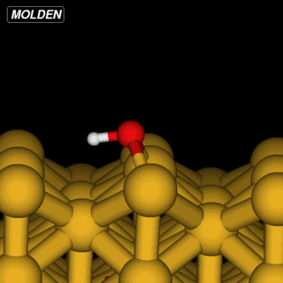

NEB methods
Nudged elastic band calculations try to find the minimal energy pathway between two conformations of a structure, i.e., how much energy is needed to enable a ‘chemical’ reaction. This is done by optimizing the geometries for a series of images interpolating between the initial/final states.
The optimization minimize the force perpendicular to the tangent between images. The NEB command actually implements the string-method, i.e., there is no spring constants between adjecent images, approximate equidistance between images is instead encouraged by redistribution along the tangent.
There are two example directories explaining the NEB method.
NH3 (Amonia inversion)
OH on Cu(110)
The directory structure used in the examples are:
/L/CGrun : Geometry of the initial state
/R/CGrun : Geometry of the final state
NH3 inversion
The command to run the example is:
NEB -n 9 -p 8 -c'2, 3,-0.476,0.824,0, 1,-0.476,0.824,0' L R
Since we have a small molecule we constrain the geometry (to fix translational and rotational symmetries). First we keep one of the hydrogens fixed ‘2,’ (where 2 is the number of the hydrogen atom). Then a second hydrogen is fixed along the vector ‘3,-0.476,0.824,0,’ (3 is the number of the hydrogen and after comes the vector, see the STRUCT.fdf to see why I choose this vector) and finally, the nitrogen is allowd to move in the plane perpendicular to the vector, ‘1,-0.476,0.824,0’ (1 is the nitrogen number).
The NEB command assembles the linear interpolation between L/R. These will end up i directories named NEB_0, NEB_1 etc. It submits job using the queing system of your cluster, see documentation about ‘~/.pbs’ directory and Inelastica.SetupRuns. During the calculation the current status is updated in the file: Convergence, which last entry looks like this:
####### Iteration 30 #######
#Fmax 0.000 0.062 0.042 0.060 0.063 0.079 0.063 0.060 0.042 0.062 0.000
#step length 0.0000 0.0000 0.0000 0.0000 0.0000 0.0000 0.0000 0.0000 0.0000 0.0000 0.0000
# Barrier [meV]:
0.0 3.7 72.2 151.2 209.5 233.9 209.5 151.2 72.2 3.7 0.0
# delta E compared to start/restart [meV]:
0.0 56.3 126.0 204.7 271.3 295.3 271.3 204.7 126.0 56.3 0.0
Where Fmax is the norm of the force normal to the tangent, and barrier the energy compared to the fixed L state.
The files NextStep.* contains animations of the path and under the NEB_* directories the Steps.* the animation of the optimizations of the individual images.
OH@Cu(110)
The OH example is simpler in that we can reuse the Siesta constraints from ‘%block GeometryConstraints’:
{kind=link}
However, the initial linear interpolation given by NEB would have the hydrogen going straight through the oxygen. So to get an initial setup we run the NEB command with the ‘-s’ (setup) flag:
NEB L R -n 11
To clean up the geoetries I have supplied a python script for this example that tries to keep the O-H bond length constant and the images equidistant.
python FixStartGeom.py
and we can run the optimization:
NEB -n 11 -p 8 L R